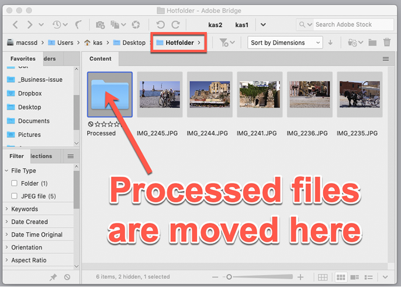
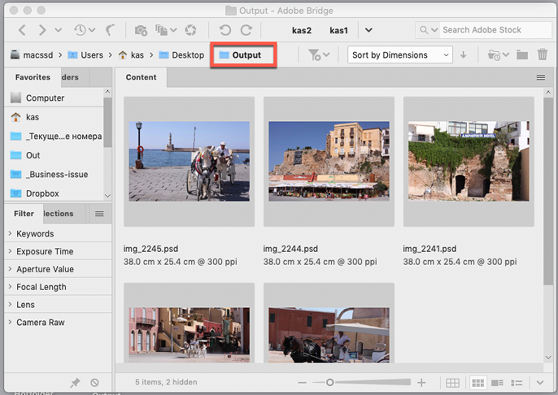

Hot folder in Bridge — resave as PSD file in Photoshop
This script was inspired by the one written by Pedro Cortez Marques which I found posted here. (On this page, you can find a brief description of the way his script works.)
Written and used only on Mac — Bridge and Photoshop CC 2019 - 2020 (so far, untested on Windows).
I totally reworked the script so it resaves every image file which gets into the hot folder in PSD format in Photoshop using the following settings:
- Save Alpha Channels — ON
- Save Layers — ON
- Save Notes — OFF
- Save Spot Colors — OFF
- Embed Color Profile — OFF
The original image is moved to the Processed folder created automatically by the script in the HotFolder.
To use the script open or create in Bridge a folder called HotFolder – the case doesn't matter – and drag & drop there an image in one of the following format: jp(e)g, png, gif, bmp, pcx, pxr, tga, tif(f), cr2, dng.
In a blink of an eye, Photoshop will resave it as PSD in the Output folder.
Before

After

There is a chance that something would go wrong in Photoshop and an error would occur ( for example, if a file is damaged and Photoshop is unable to open it). In this case, an error message would be written in the ESTK console.
This is an ongoing project: I am planning to continue developing it if time permits.
Click here to download the script. If you don't know how to install it here are step-by-step instructions.
See also Watched folder and Hot folder listener in Bridge.